ENDF Tokenization¶
Here is the implementation of the ENDF tokenizer. The bulk of the work is done by endftod() called in the third-to-last-line: it gets hit once for every data point in an ENDF file. So we want to make sure it runs quickly.
def fromendf_tok_conv(char * s):
"""A replacement for numpy.fromstring().
Parameters
----------
s : str
String of data, consisting of complete lines of ENDF data.
Returns
-------
data : ndarray, 1d, float64
Will always return a 1d float64 array. You must reshape to the
appropriate shape.
"""
cdef int i, num_entries
cdef char entry[12]
cdef long pos = 0
cdef np.ndarray[np.float64_t, ndim=1] cdata
i = 0
num_entries = len(s)/81 * 6
cdata = np.empty(num_entries, dtype=np.float64)
while i < num_entries:
pos = i*11 + i/6 * 15
strncpy(entry, s+pos, 11)
cdata[i] = endftod(entry)
i += 1
return cdata
One might wonder why we are using endftod() to convert from ENDF to float instead of the more conventional atof(). The reason is that atof() contains a lot of general-purpose code that we do not need, which slows down the code considerably. In addition, the ENDF format is not atof()-friendly, so it needs a little doctoring up before getting passed to atof(). This adds even more overhead.
Compare the following two implementations of endftod(), one using atof() and the other using our custom endftod().
This is the implementation in Cython utilizing atof():
def endftod(char * s):
"""This function converts a number listed on an ENDF tape into a float or int
depending on whether an exponent is present.
"""
cdef char char2 = s[2]
cdef char char8 = s[8]
cdef char char9 = s[9]
cdef char news [12]
cdef double v
cdef int i
for i in range(13):
news[i] = ' '
if char2 == '.' and (char9 == '+' or char9 == '-'):
strncpy(news, s, 9)
news[9] = 'e'
news[10] = s[9]
news[11] = s[10]
v = atof(news)
elif char2 == '.' and (char8 == '+' or char8 == '-'):
strncpy(news, s, 8)
news[8] = 'e'
news[9] = s[8]
news[10] = s[9]
news[11] = s[10]
v = atof(news)
else:
v = atof(s)
return v
This is the custom C version, endftod():
double pyne::endftod (char * s)
{
// Converts string from ENDF to float64.
int pos, mant, exp;
double v, dbl_exp;
mant = exp = 0;
if (s[2] == '.')
// Convert an ENDF float
{
if (s[9] == '+' or s[9] == '-')
{
// All these factors of ten are from place values.
mant = s[8] + 10 * s[7] + 100 * s[6] + 1000 * s[5] + 10000 * s[4] + \
100000 * s[3] + 1000000 * s[1] - 1111111 * '0';
exp = s[10] - '0';
// Make the right power of 10.
dbl_exp = (exp & 01? 10.: 1) * \
((exp >>= 1) & 01? 100.: 1) * \
((exp >>= 1) & 01? 1.0e4: 1) * \
((exp >>= 1) & 01? 1.0e8: 1);
// Adjust for powers of ten from treating mantissa as an integer.
dbl_exp = (s[9] == '-'? 1/dbl_exp: dbl_exp) * 1.0e-6;
// Get mantissa sign, apply exponent.
v = mant * (s[0] == '-'? -1: 1) * dbl_exp;
}
else
{
mant = s[7] + 10 * s[6] + 100 * s[5] + 1000 * s[4] + 10000 * s[3] + \
100000 * s[1] - 111111 * '0';
exp = s[10] + 10 * s[9] - 11 * '0';
dbl_exp = (exp & 01? 10.: 1) * \
((exp >>= 1) & 01? 100.: 1) * \
((exp >>= 1) & 01? 1.0e4: 1) * \
((exp >>= 1) & 01? 1.0e8: 1) * \
((exp >>= 1) & 01? 1.0e16: 1) * \
((exp >>= 1) & 01? 1.0e32: 1) * \
((exp >>= 1) & 01? 1.0e64: 1);
dbl_exp = (s[8] == '-'? 1/dbl_exp: dbl_exp) * 1.0e-5;
v = mant * (s[0] == '-'? -1: 1) * dbl_exp;
}
}
// Convert an ENDF int to float; we start from the last char in the field and
// move forward until we hit a non-digit.
else
{
v = 0;
mant = 1; // Here we use mant for the place value about to be read in.
pos = 10;
while (s[pos] != '-' and s[pos] != '+' and s[pos] != ' ' and pos > 0)
{
v += mant * (s[pos] - '0');
mant *= 10;
pos--;
}
v *= (s[pos] == '-'? -1: 1);
}
return v;
}
The result is an approximate 40% decrease in time spent; timeit shows the atof() implementation to take 230ns/loop, and the custom C implementation to take 115ns/loop for floats and 130ns/loop for ints on my laptop. These ratios scale up to fromendf_tok().
These speedups are possible because we know the structure of the ENDF format, allowing us to eliminate much of the atof() code. This is particularly helpful in the float case, since each field is fixed-width once the size of the exponent has been determined. This allows us to eliminate loops completely. Since we also know the position of the decimal point, we are able to easily distinguish between float and int values as well as know which place values correspond to which characters in the string.
Unfortunately, we cannot avoid loops in the integer conversion because it is not fixed-width. Here we have opted to count up in place value because ENDF numbers are right-justified. Instead of iterating through a bunch of whitespace we can usually hit the end of the number in a few tries.
Integration of Energy Groups¶
The data for each energy group consists of an array of (energy, cross-section) pairs. The data between the points can be interpolated using the schemes given in the data. Each group only uses one interpolation scheme, which is given by an integer flag in the data.
The available interpolation schemes include histogram, linear, y linear in ln(x), x linear in ln(y), ln(y) linear in ln(x), and a special interpolation law described in the ENDF Manual, pp. 23-24.
Histogram and linear are trivial to implement. However, the various log cases are slightly more complicated.
In the case where y is a linear function of ln(x), we integrate over the region like this:
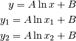
With some algebra, we get:
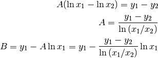
Then we can take the integral and plug in A and B:
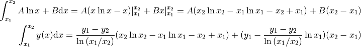
When x is linear in ln(y), we have:
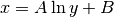
Since A and B are arbitrary constants, we can express this relation as:
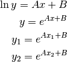
So now we can solve for A:
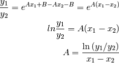
Plug this in to the original relation to solve for B:
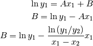
Now we integrate 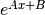. We all know this one!
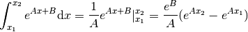
Factor stuff out and you get:
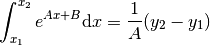
When ln(y) is linear in ln(x) we have:
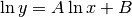
Taking e to the power of both sides gives us:
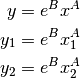
With some algebra we get:
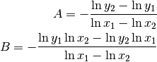
And finally we can plug A and B into the integral:
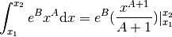
The ENDF Manual also mentions a sixth one-dimensional interpolation law, described in detail on pp. 23-24. From this, I quote:
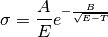
Where T = 0 for exothermic reactions with Q greater than 0 and equal to kinematic threshold energy for endothermic reactions with Q less than or equal to 0.
The ENDF Manual also states that this is “for charged-particle cross sections and is based on the limiting forms of the Coulomb penetrabilities for exothermic reactions.” Because of this, and the difficulty of analytically solving this integral, we have opted to not implement this (yet).